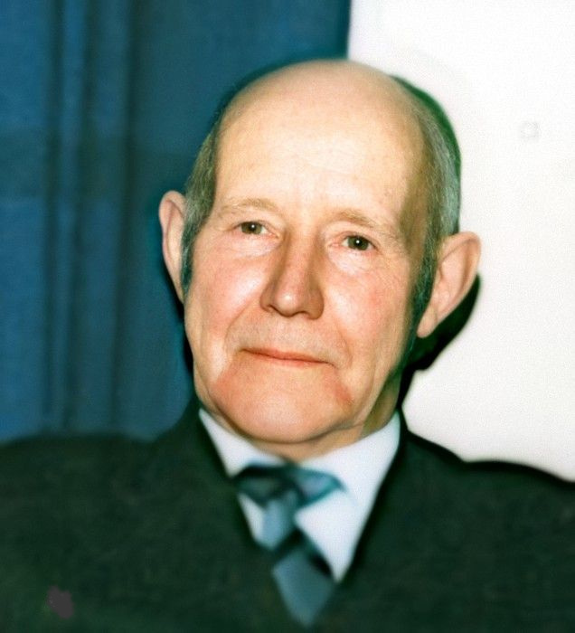

Född 30 mar 1921 i Östra Ny (E) 1 .
Död 1 maj 2016 på Värmlandsgatan 16, Gård 6, Kv Järven, Marielund, Norrköping, Norrköping Sankt Olof (E) 2 .

F Herman Isidor Karlsson.Född 24 okt 1896 i Häradsbäcken, Hällerstad, Östra Ryd (E) 3 .
Död 24 feb 1981 på Reenstiernagatan 4, Gård 10, Kv Gården, Enebymo, Norrköping, Norrköpings Östra Eneby (E) 2 .
 FF
Klas Ferdinand Karlsson.
FF
Klas Ferdinand Karlsson.

Född 19 jun 1859 i Holmtebo, Ringarum (E) 4 .
Död 31 jan 1945 i Lunds jägmästaregård, Lund, Drothem (E) 2 .
FFF Karl Magnus Andersson.
Född 19 maj 1817 i Holmtebo, Ringarum (E) 5 .
Död 1 nov 1897 i Stensberg, Holmtebo, Ringarum (E) 6 .
FFM Karolina Wilhelmina Östensdotter.
Född 18 mar 1834 i Stockebäck, Tryserum (E) 7 .
Död 13 apr 1893 i Stensberg, Holmtebo, Ringarum (E) 8 .
 FM
Hilda Sofia Karlsdotter.
FM
Hilda Sofia Karlsdotter.
Född 2 feb 1867 i Borrdalen, Fredriksnäs, Gryt (E) 9 .
Död 28 okt 1934 i Lunds jägmästaregård, Lund, Drothem (E) 2 .
FMF Karl Peter Karlsson.
Född 27 feb 1837 i Käggla/Kägglö, Tryserum (E) 10 .
Död 23 feb 1904 i Hästhagen, Spolstad, Gårdeby (E) 11 .
FMM Anna Sofia Svensdotter.
Född 21 apr 1848 i Björklund, Rullerum, Ringarum (E) 12 .
Död 8 jul 1932 i Hagsätter, Halleby, Skärkind (E) 13 .
Född 16 maj 1904 i Sverkelsbo, Jonsberg (E) 14 .
Död 28 apr 1961 på Lindhagagatan 20 A, Gård 27, Kv Bonden, Enebymo, Norrköping, Norrköpings Östra Eneby (E) 2 .
 Född
3 feb 1947
i Skällvik (E)
Född
3 feb 1947
i Skällvik (E)